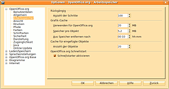

OxygenOffice
Archivierte Anleitung
Dieser Artikel wurde archiviert, da er - oder Teile daraus - nur noch unter einer älteren Ubuntu-Version nutzbar ist. Diese Anleitung wird vom Wiki-Team weder auf Richtigkeit überprüft noch anderweitig gepflegt. Zusätzlich wurde der Artikel für weitere Änderungen gesperrt.
Zum Verständnis dieses Artikels sind folgende Seiten hilfreich:
OxygenOffice Professional  basiert auf OpenOffice.org bzw. Go-oo
basiert auf OpenOffice.org bzw. Go-oo  und enthält zusätzliche Cliparts, Vorlagen und Schriften. OxygenOffice Professional wird von einer internationalen Entwicklergruppe erstellt. Vormals hieß das Paket OpenOffice.org Premium - um die Unabhängigkeit des Open Source Projektes herauszustellen, wurde es umbenannt.
und enthält zusätzliche Cliparts, Vorlagen und Schriften. OxygenOffice Professional wird von einer internationalen Entwicklergruppe erstellt. Vormals hieß das Paket OpenOffice.org Premium - um die Unabhängigkeit des Open Source Projektes herauszustellen, wurde es umbenannt.
Alle Module von OpenOffice.org sind auch in OxygenOffice enthalten, wie z.B. Writer, Calc oder Impress. OxygenOffice Professional beinhaltet zusätzlich zur normalen OpenOffice.org-Version eine umfangreiche Sammlung von über 3400 freien Cliparts und Fotos. Die Bilder können von der Gallery aus in die Dokumente kopiert werden. Die Anzahl der Dokumenten-Vorlagen hat sich je nach Sprachversion erhöht. 90 verschiedene Schriftarten sind enthalten. All diese kostenlosen Extras werden bei der Installation gleich mit installiert. Die Installationsgröße des gesamten Pakets beläuft sich auf etwa 1 GB. (Deutschsprachige Webseite )
Versionen¶
Die aktuelle Version von OxygenOffice basiert auf Version 3.1.1. Es sind Sprachversionen in Deutsch, Englisch, Türkisch, Französisch, Spanisch, Italienisch, Polnisch, Niederländisch, Schwedisch, Ungarisch, Finnisch, Portugiesisch, Japanisch, Chinesisch, Tschechisch, Slowenisch, Finnisch und Georgisch erhältlich.
| Splashscreen |
Installation¶
Als erstes wird die alte OpenOffice.org-Version bzw. StarOffice über die Paketverwaltung deinstalliert [1]. Dann muss man OxygenOffice von hier runter laden. Hier werden zwei Versionen angeboten wobei für Ubuntu das Archiv mit den .deb-Paketen gebraucht wird.
Installation der Pakete¶
Linkto-Suche: Fremdquellen Das Archiv in dem sich die deb-Pakete befinden, muss zuerst entpackt werden [2]. Dann werden sie manuell installiert [3]. Um für die jeweilige Desktop-Umgebung Anwendungsstarter zur Verfügung zu haben muss das Paket
openoffice.org<version>-debian-menus_version_all.deb
installiert werden [4], das sich im Unterverzeichnis /Desktop-Integration/ befindet.
Start¶
Wenn die Pakete fehlerfrei installiert wurden, lassen sich die jeweiligen Programme über Anwendungsstarter in
"Anwendungen -> Büro" (GNOME)
"K-Menü -> Büroanwendungen" (KDE)
"Applications -> Büro" (Xfce)
starten [5].
Konfiguration¶
Java Runtime Environment¶
Um den vollen Funktionsumfang von OxygenOffice nutzen zu können, sollte Java installiert werden. Wenn das Java Runtime Environment (JRE) installiert wurde, muss man dies nach der Installation im Menü unter "Extras -> Optionen -> Java" einbinden.
Schnellstarter¶
|  |
| Schnellstarter |
Den Schnellstarter kann man ganz einfach einschalten, indem man den eingebauten Schnellstarter im OxygenOffice Optionen-Menü aktiviert. Dazu muss man unter "Extras -> Optionen -> Arbeitsspeicher" das Häkchen bei "Schnellstarter" aktivieren.
Vorlagen¶
Weitere empfehlenswerte Vorlagen kann man direkt von der Projekt Webseite herunter laden. Diese kann man auch mit der normalen OpenOffice.org Version nutzen.
- Erstellt mit Inyoka
-
 2004 – 2017 ubuntuusers.de • Einige Rechte vorbehalten
2004 – 2017 ubuntuusers.de • Einige Rechte vorbehalten
Lizenz • Kontakt • Datenschutz • Impressum • Serverstatus -
Serverhousing gespendet von